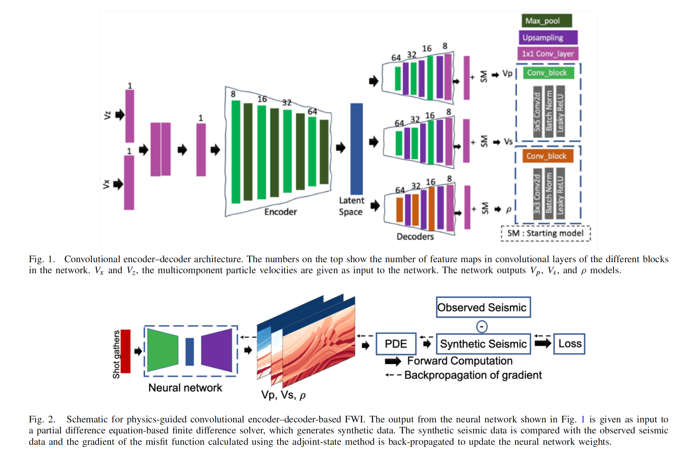
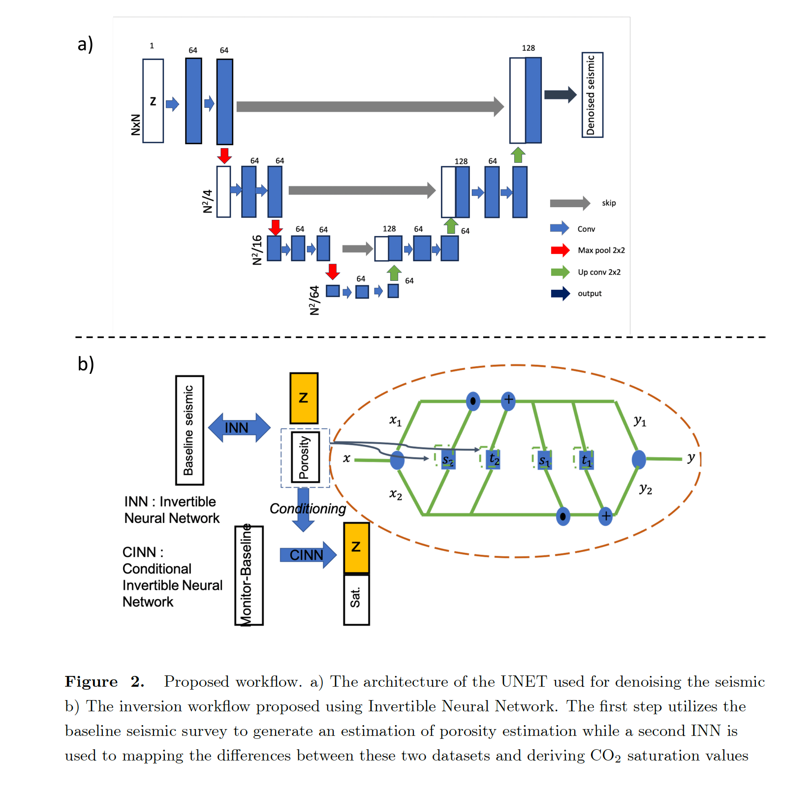

Personal website · ADharaUTEXAS123007.github.io
I am a physicist-turned-AI engineer and research scientist specializing in physics-guided machine learning and large-scale inverse problems. My work focuses on regularizing ill-posed scientific systems—particularly in seismic imaging and subsurface modeling—by integrating first-principles physics with deep generative models, uncertainty quantification, and high-performance GPU computing. I have developed and trained large-scale diffusion models and probabilistic priors designed to stabilize and accelerate inverse problem workflows in geoscience.
More recently, I have expanded into building scalable, agentic AI systems for industrial applications, including global trade compliance, supply-chain intelligence, and energy exploration. This includes designing end-to-end training pipelines for large language models—spanning supervised fine-tuning, RLHF/GRPO optimization, structured tool-calling, and retrieval-augmented reasoning—to deploy domain-aware AI systems in production environments.
I am an AI engineer and computational scientist working at the intersection of physics, machine learning, and large-scale industrial systems.
I earned my Ph.D. from The University of Texas at Austin in 2023, where I focused on physics-guided deep learning for large-scale imaging and inverse problems.
My research explores how machine learning can be embedded into physical modeling pipelines—not as a black box, but as a structured prior that respects governing equations, uncertainty, and domain knowledge.
My work spans seismic inversion, uncertainty quantification, generative modeling, and high-performance computing. I have developed diffusion and flow-based generative models for subsurface imaging, invertible neural networks for uncertainty estimation, and physics-guided autoencoders designed to reduce reliance on hand-crafted starting models in full waveform inversion. Arnab_Dhara_CV_2024_short_edited My research has been published in venues such as AAAI, IEEE, IMAGE, TLE, and Geophysical Prospecting. Arnab_Dhara_CV_2024_short_edited
Currently, I serve as a Staff Data Scientist at SparkCognition (Avathon) in Austin. There, I build physics-guided generative AI systems and agentic AI frameworks for industrial automation, energy exploration, and global trade management. My work includes:
Before that, I worked with Chevron, Shell, WesternGeco, and Halliburton, applying deep learning to seismic imaging, uncertainty modeling, optical flow, and drilling analytics. Earlier in my career, I was a software engineer at Schlumberger, where I built production-grade imaging and data-management systems.
Technically, I work across PyTorch, TensorFlow, LangGraph, LangChain, reinforcement learning pipelines, and HPC systems such as TACC. I have received multiple awards, including Best Paper/Presentation at IMAGE 2022, and I hold patents in ML-driven sensor analytics and generative image transformation.
At a broader level, I am interested in building foundation models for the Earth—generative, uncertainty-aware AI systems that integrate physics, remote sensing, and large-scale computation to accelerate scientific discovery and industrial decision-making.
I believe the future of AI is not about replacing domain expertise, but augmenting it: merging physical reasoning with probabilistic generative models, and designing agents that can reason, retrieve, and act across complex scientific and industrial workflows.

